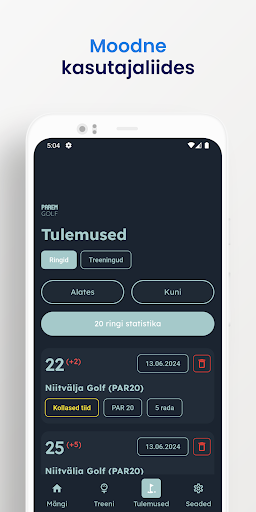

ParemGolf on funktsiooniderohke eestikeelne golfiäpp. Sellel on palju sisseehitatud võimalusi, näiteks reaalajas kaugus lipust ja pilvesse salvestuvad andmed. Samuti saad äppi lisada oma golfikepid: nii saad parema ülevaate sellest, mis keppe kõige enam kasutad, aga iga kepi kohta ka keskmise löögipikkuse.
Tegu on minu kõige edasijõudnuma mobiiliprojektiga, kus kasutasin kõiki teadmisi nii Flutterist kui kasutajaliidese loomisest. Kuigi tagantjärele teeksin mõned lahendused teisiti, on see siiski minu mobiiliarenduse viimane tase.
